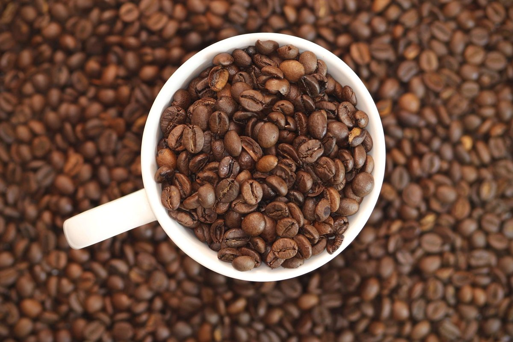

Six Popular Sugar Substitutes Linked To Faster Brain Aging: What to Know

Key takeaways
- I used to pour yellow and pink packets into my iced coffee every morning, convinced I was making the smart choice for my waistline.
- Then I started noticing foggy afternoons, forgotten keys, and a strange mental lag that made simple tasks feel like climbing Mou
- Focus on: The Six Sweeteners Under the Microscope.
I used to pour yellow and pink packets into my iced coffee every morning, convinced I was making the smart choice for my waistline. Then I started noticing foggy afternoons, forgotten keys, and a strange mental lag that made simple tasks feel like climbing Mount Rainier.
When new research highlighted Six Popular Sugar Substitutes Linked To Faster Brain Aging, it felt like a punch to the gut. The guilt was real, but learning the truth helped me reboot my daily routine without sacrificing flavor or sanity.
The Six Sweeteners Under the Microscope
Scientists are increasingly studying how chemical sweetening agents alter our neurochemistry. Among the top offenders are aspartame, sucralose, saccharin, acesulfame potassium, erythritol, and certain refined xylitol blends.
When we constantly consume these six popular sugar substitutes linked to faster brain aging, we trick our brain's reward center without giving it real fuel. This disconnect can trigger mild neuroinflammation, leading to that chronic brain fog so many of us brush off as just getting older.
Instead of panicking and throwing out everything in your pantry, you can check out this related healthy tip to ease your transition. Small, consistent shifts always beat panic-driven overhauls.
Why Your Brain Feels the Burn
Your brain consumes roughly twenty percent of your daily metabolic energy. Feeding it synthetic compounds can alter your microvascular network, impairing blood flow to sensitive memory centers like the hippocampus.
Over time, this vascular stress can make your tissue act older than it actually is. If you want to protect your focus, reading a another practical guide on nutrient-dense living can give you immediate, actionable ideas.
To keep your circulation robust, I always suggest pairing dietary changes with regular movement. Grab a Resistance Bands Set to get quick 10-minute strength sessions right in your living room between Zoom calls.
The 2-Minute Win
Check your coffee creamer or protein bar label right now. If you see aspartame or sucralose, swap it tomorrow for raw honey, maple syrup, or plain cinnamon.
Real-Food Swaps That Satisfy
You don't need to live a life devoid of sweetness. Switching to whole-food alternatives like date paste, organic stevia leaf, or monk fruit extract can satisfy cravings while feeding your body actual antioxidants.
For more strategies on keeping your routines enjoyable and sustainable, take a look at this similar wellness insight. Keeping things simple is the secret to making habits stick.
When you reduce synthetic sweeteners, your tastebuds recalibrate within two weeks. Food starts tasting naturally sweeter, and your afternoon mental clarity improves significantly.
Prioritize whole, recognizable ingredients over hyper-processed zero-calorie tricks; your future self will thank you for the extra focus.
Supporting Cognitive Vitality Daily
Protecting your mind involves a whole-body strategy that combines clean nutrition, daily movement, and active stress management. Exercise boosts blood flow directly to the brain, helping clear out metabolic waste.
If you want to stay consistent with this holistic vision, start with a simple morning walk or light resistance training routine. Consistent daily action builds long-term neurological resilience faster than any shortcut.
Don't beat yourself up if you enjoyed a diet soda today. Focus on making your next decision a nourishing one, and remember to explore more longevity guides to keep building your momentum.
Educational only — not medical advice.
Disclosure: This page may contain affiliate links.
Recommended Reading
- Daily Gratitude Practice: Boost Mood & Reduce Stress Naturally
- Scientists Discover How Deep Sleep Builds Muscle, Burns Fat, And Boosts The Brain
- Morning Routines for Energy & Focus: Boost Your Day Even If You're Not a Morning Person
More in longevity
 longevity
longevityMediterranean Diet May Boost Tiny Proteins That Protect The Heart And Brain
New research shows the Mediterranean Diet May Boost Tiny Proteins That Protect The Heart And Brain. Learn practical ways
Read article → longevity
longevityScientists Discover A Surprising Link Between Vitamin C And Cancer Survival
Scientists Discover A Surprising Link Between Vitamin C And Cancer Survival. Learn how high-dose IV therapies and gut he
Read article →Related posts
longevityMediterranean Diet May Boost Tiny Proteins That Protect The Heart And Brain
New research shows the Mediterranean Diet May Boost Tiny Proteins That Protect The Heart And Brain. Learn practical ways
Read article →longevityScientists Discover A Surprising Link Between Vitamin C And Cancer Survival
Scientists Discover A Surprising Link Between Vitamin C And Cancer Survival. Learn how high-dose IV therapies and gut he
Read article → longevity
longevityStop Overcomplicating: Scientists Find 10 Different Diets Linked To Slower Aging
Scientists find 10 different diets linked to slower aging. Learn how simple food choices and restorative sleep can trans
Read article →